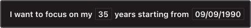

Build a reflection habit
About
Motley is a Mac app that shows weeks of your life on the desktop.
Each week is shown as a box on a chart. A box can be filled with interesting events. An event has a colour and notes.
Think of it as filling a travel map of where you've been, but for your experiences.

Who might use it?
📆 Moodtracker. You want to keep a record of your mood and reflect on your experiences. Track mood, habits, health state with colorful events and emojis.
🌸 Mindfulness seeker. You want to value your time more and bring good memories back. Reflect on your experiences and store precious moments in your life calendar.
📚 Notetaker. You tried keeping a diary, but it's too demanding — you want to write notes in an easy way. Make notes more personal with colour and emojis, each note is tied to your calendar.
🗺 Goal planner. Set life milestones and create long-term plans for the future. Focus on a desired time range and get a bird’s-eye view on your life.
Your calendar is a visual daily log,
see instead of read
Features
Layout
Set a desired layout for your calendar to make time more tangible. Group weeks by months or every four weeks.
Color & Themes
Set a colour for an event or a calendar. Use colours to group and distinguish between. Adjust the entire calendar with color themes.
Emojis🃏
Put an emoji to your event to make it more personal and recognisable.

Living Wallpaper
Put your calendar on the desktop, making your wallpaper live.
Be motivated just by a glance.

Calendar Integration
All your events are live in you standard Calendar app.
Do everything Calendar can do: share, subscribe, access from different devices.
Search
Find that day you were in that city a long time ago.
Sharing & Sync
Share calendars with others, collaborate on common goals. Sync calendars with iCloud or any other client.
Privacy
Your events are stored securely in Calendars, export and view your data even without the app.
And even more: multiple calendars, hide desktop icons, random event, calendar colors, customisable range, data ownership

FAQ
What do colours mean?
Anything you want. In the essence, you set colours to make events recognisiable and more personal. Colours can help you distinguish events or, on the other hand, group them and create some relation. For example, you can build a mood tracking calendar, where a colour states your mood.
Import my events?
Add an account in the standard Calendar app's preferenses(ir in Internet Accounts in System Preferences) then Motley will pick up calendars from your accounts.
If you are already have an account in the Calendar app enable it in Motle's preferences.
You can import calendar as a file in the Calendar app click on the File menu, then Import…
How to share?
The easiest to share is an iCloud calendar: open the Calendar app, then right-click on the calendar you want to share in the sidebar, then Share Calendar…
To share a Gmail calendar follow the instructions “Share a calendar with the public”.
Is this Life Calendar?
Yes, the initial idea was inspired by Tim Urban's post.
Why subscription and ulimited trial?
Subscription is my option to sustain as a product, since I'm a sole developer. The app is priced fairly: yearly subscription goes together with an yearly major update. Think of it as you would get “Motley 2” at the end of a year.
Notice that I won't persuade you to subscribe from the start or limit you with a trial period — the app is free to download and you can use it without any limitations, but for continued use I ask you to purchase a subscription.